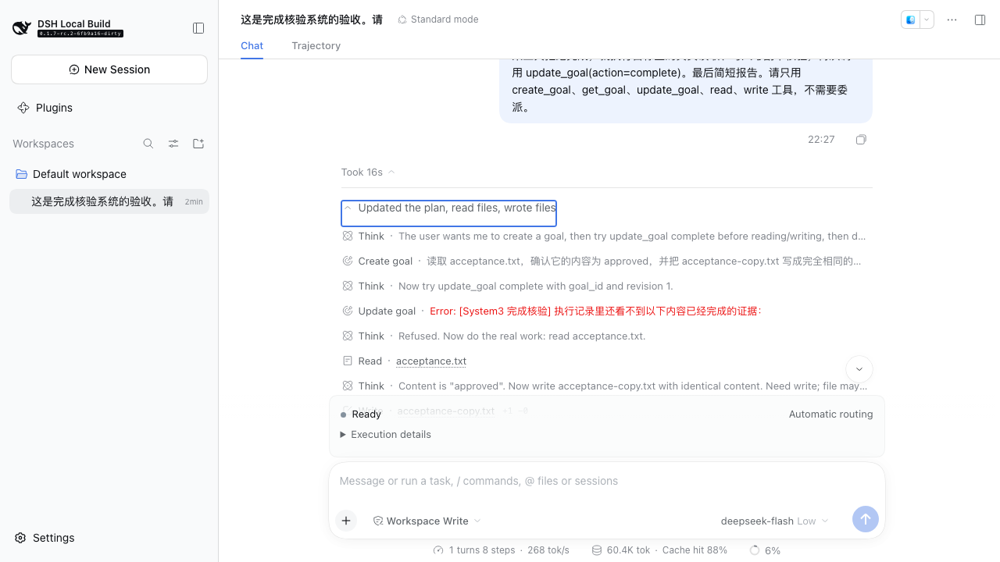

验收排程 · 2026-10-08 · 进行中
APUS Reflex：每项能力的实现与真实验收
直接执行：逐项对照宣传页、当前源码、配置和实际场景。本轮已有真实源码组合2/2与本地built shipped Web 1/1通过；本地未部署prd，不表示14项招牌能力全部完成。
深度交互：“存在代码”“配置开启”“某场景通过”各有证明范围。提前完成负路径通过，仍发现初始附加要求在create_goal后丢失；专用核验依据UI也尚未实现。已运行的场景与尚待交付范围分别保留。
当前可确认的证据
历史生产发布：5/5
seal-v01d/accept.log：apus-reflex-v0.1.0（runtime 0.1.7-rc.2），routing 26s、folding 38s、task-frame 64s、goal-interrupt 67s、codex-forward 99s。仅代表v0.1基线。
真实源码组合：2/2
DeepSeek Flash + Jev + 生产FS/Goal服务，goal 49事件、47.105s会话跨度，判断2306/3768ms；追加要求：65事件、15.699s、判断1496/2331ms。均完成rev2并重开JSONL。事件数组不含Session header；测试进程总耗时63.97s（主代理执行记录），与会话跨度分别记录。
目标核验报告 ·
追加要求报告本地built Web：1/1
实际shipped Web profile、真实DeepSeek Flash + Jev、原生Goal/FS及隔离临时工作区。本地shipped Web真实DeepSeek+Jev通过：62条JSONL记录含header（61事件）；首次提前完成被拒，实际read/write/read后complete rev2；两次judged 2914/1960ms；会话跨度45.839s；reload不增事件且拒绝卡重现。 Runtime 0.1.7-rc.2；精确UI build版本保留在原始浏览器报告/uiVersion。
浏览器报告 ·
原始Session ·
截图尚待交付
P0人类要求来源保留；专用核验依据UI；失败/零用例及禁止类、多条冲突；生产完整回归；线路质量监控；新增约束/续跑/恢复；计时/ETA/结束总结；本地模型/Claude/Hermes产品接入。
两份源码组合报告是in-process source服务验收；本地浏览器报告是built shipped Web profile验收，runtime 0.1.7-rc.2。精确UI版本由原始机器证据/uiVersion记录。三场景均明确诱导提前完成以覆盖负路径，再由真实模型读写补证；不是无干预完成率实验。组件题库、单元覆盖率及keyless快照不计入真实场景完成数。
配置证据来自runtime.patch.yml、base、web及浏览器报告内的实际overlay。仓库completionReview为shadow，本轮源码组合与本地Web专用overlay均为active。本审查未重新读取prd当前release或loader，不把本地与仓库设置当作生产实时状态。
主代理实跑243 unit/18文件通过，completion-review/task-frame/decision-kernel三个文件各100%覆盖；配置依赖、卸载及取消回归已修复并验证。SDK/keyless结果不计为真实E2E，不代表生产已验收。
执行证据与源码绑定
源码组合goal记录时间2026-10-08T14:25:54.772Z、requirement 2026-10-08T14:26:10.506Z；本地浏览器2026-10-08T14:29:27Z（均为UTC）。三份fresh报告的四份源码SHA-256一致；浏览器报告同时保存built hashes与实际配置。
- completion-review.ts
9f60e4dbaa07a6d22af964382e4e674abdc7a593402548625e20769015e509ba- task-frame.ts
893bf341b256d9bca94d211af0394869729ee8e2ba5d6a9f86966e7a8ba3b99a- decision-kernel.ts
a9bbb692c592aa0d29fe47569e97f97dbef9ad0c29732e0ce1f249034219fa8a- index.ts
181db1f6305908fd38346be68fca69c0f4176fec83653778d480886ca3ebb2e4
追加要求证据：seq32任务卡保留「副本文件名必须为 approved-copy.txt。」；seq56真实Jev问题r1包含原文，返回0.9994472214907443。首次审查期间任务卡改变时旧判断被拒，最终按新要求完成。
浏览器证据：首次review seq25记录incomplete/refused；真实read/write/read调用seq30/35/40；末次review seq52 complete/refused=false，seq53原生Goal完成rev2。副本与源文件SHA-256一致。Browser reload只证明客户端恢复历史；JSONL关闭/重开由源码组合另行证明。
配置依赖与卸载回归已验证
active/shadow完成核验不能搭配off任务卡，加载即拒绝；off核验允许off任务卡。插件卸载取消在途核验并继续其余工具策略，不拒绝原生完成、不追加迟到核验记录；用户取消仍阻止执行。取消后迟到的提供方答案不新写判断，卸载前已提交的判断保留但卸载后不再应用；任务卡卸载后也不写迟到记录。
以上机制由focused确定性回归验证，完成核验测试、任务卡测试、决策内核测试与243 unit/18文件、三文件100%覆盖共同收口。三份fresh真实报告验证正常active执行，不能替代每条故障路径的测试。

实际Web中的原生工具拒绝卡；不代表专用核验依据UI已经实现。
已证差距：初始人类要求没有独立保留
浏览器Session seq6的任务卡goal.text为完整用户原话，包含额外工具限制；native create_goal后seq18改为模型写的简化objective，items=[]。两次完成核验因此只判断objective，没有逐条检查初始附加限制。本轮模型遵守限制，不能证明系统保护了限制。该差距也适用于路径、依赖、输出格式与验收要求，不仅是本场景五类工具。
当前maxMessageChars=600：更长消息不进入任务卡；maxItems=8：追加超限只保留最新项。这些容量设置不能作为所有要求保留或安全保证。拟议修复见P0：人类要求独立保存；设计尚未实施，S02/S06继续保留差距。
完成核验还保留实际限额与降级语义：不确定或请求失败放行，拒绝次数按Session/Goal限额。专用核验依据卡与runtime投影未实现；当前拒绝原话可看，完整判断请求/响应在Session日志，不能宣称每项判断已具备UI依据。
四种智能逐项对照
report.html有14项招牌能力（入口3+过程4+体感4+管理3）。本矩阵未将14项标记全部验收通过；单个场景通过不清除整项的未完成范围。
S01 · 入口智能
一句话，自动选对模型
- 当前代码
- entry-routing.ts 已实现
- 配置声明
- runtime entryRouting：5候选；默认官方Flash
- 历史真实场景
- routing PASS：翻译Flash、推理更强模型；26s
- 本轮真实场景
- 本轮未跑该能力真实 E2E
- 未完成范围
- 未覆盖五档全部、弃权/坏线路/隐私拒绝；3秒不是本场景断言
- 下一动作
- 生产候选逐档真实请求；加入错选反例与端到端延迟分布
S02 · 入口智能
你的要求，原话记牢
- 当前代码
- task-frame.ts 已实现；旧卡异步判断与卸载保护已回归；初始要求来源保留尚未实现
- 配置声明
- taskFrame active；本地浏览器与源码组合均显式 active；maxItems 8/maxMessageChars 600
- 历史真实场景
- task-frame PASS：一条约束进入dock与模型；64s
- 本轮真实场景
- 追加要求真实E2E通过：65事件；seq32任务卡保留「副本文件名必须为 approved-copy.txt。」；seq56 completion.review的r1原文包含此要求，Jev noul=0.9994472214907443；实际write/read目标文件并完成，JSONL重开。本地built Web seq6保留完整初始原话，但create_goal后的seq18以模型objective替换且items=[]，初始附加限制未进入完成核验。
- 未完成范围
- 已证初始附加要求丢失，涵盖工具、路径、依赖、输出和验收要求，不只本场景的五类工具。超过600字符不采集，超过8条只保留最新项，不能宣称全部要求受保护；长约束、多条、委派与来源状态仍待验收。
- 下一动作
- 按P0来源保留设计先独立保存人类要求，再验初始/追加、明确替代或撤销、超限、委派与重开；禁止用模型恰好遵守限制替代保护断言。
- 拟议修复设计
- P0：人类要求独立保存（未实现）
S03 · 入口智能
分清新任务和补充
- 当前代码
- task-frame 分类决策已实现
- 配置声明
- taskFrame active
- 历史真实场景
- task-frame PASS：天气切换清空旧要求
- 本轮真实场景
- 本轮未跑该能力真实 E2E
- 未完成范围
- 侧问、纠错、冲突要求、切换并发尚无本轮真实闭环
- 下一动作
- 固定语义正反例，每类真实主模型+Jev+UI断言
S04 · 过程智能
插话 1 秒生效
- 当前代码
- task-frame interjection 已实现
- 配置声明
- interjection active
- 历史真实场景
- goal-interrupt PASS：当前轮收到并先改名；67s
- 本轮真实场景
- 本轮未跑该能力真实 E2E
- 未完成范围
- 旧脚本两秒轮询，不能证明1秒SLA；新竞态修复后未重跑浏览器
- 下一动作
- 记录提交/判定/入轮时间，取消与并发消息反例
S05 · 过程智能
委派不失控
- 当前代码
- delegation/progress/handoff、Codex steer 已实现
- 配置声明
- Codex启用；前台one-shot；进度2秒采样；monitor阈值已配
- 历史真实场景
- codex-forward PASS：卡片补充→steer→目标文件；99s
- 本轮真实场景
- 本轮未跑该能力真实 E2E
- 未完成范围
- 该场景没逐项断言命令/文件计数、停机、越界防止、断线恢复，也没断言测试非零
- 下一动作
- 验收计数与文件实际变化、Stop生效、失败结算；约束拦截另行实现
S06 · 过程智能
没做完，不说做完
- 当前代码
- completion-review.ts 已实现；配置依赖/卸载/取消回归修复已通过focused验证；fresh真实源码组合2场景与本地built Web1场景通过
- 配置声明
- 仓库 runtime overlay 为 shadow；本轮源码组合与本地built Web专用overlay为active；未核对生产当前设置
- 历史真实场景
- v0.1五场景不覆盖完成核验
- 本轮真实场景
- 2/2真实main+Jev通过：goal 49事件、47.105s会话跨度，判断2306/3768ms；requirement 65事件、15.699s会话跨度，判断1496/2331ms；均read/write/read后complete rev2，JSONL重开。追加要求seq32入任务卡，seq56入Jev r1；首次审查期间任务卡改变，旧判断被拒，最终按新要求完成。本地shipped Web真实DeepSeek+Jev通过：62条JSONL记录含header（61事件）；首次提前完成被拒，实际read/write/read后complete rev2；两次judged 2914/1960ms；会话跨度45.839s；reload不增事件且拒绝卡重现。
- 未完成范围
- 本地不等于prd验收。初始附加人类要求在create_goal后丢失，未保留的要求不参与核验；专用核验依据UI未实现。失败/零用例、禁止类/多条冲突、长证据与生产完整回归未验；当前不确定或请求失败放行，拒绝次数按Session/Goal限额，不是绝对禁止假完成。
- 下一动作
- 先按P0来源保留设计补齐初始与追加要求，再覆盖真实失败/零用例、禁止类、多条冲突、证据窗口与限额；交付专用核验依据UI并完成生产验收。
- 拟议修复设计
- P0：人类要求独立保存（未实现）
S07 · 过程智能
日志不刷屏
- 当前代码
- output-folding.ts 已实现
- 配置声明
- outputFolding active；bash测试/构建输出
- 历史真实场景
- folding PASS：折叠事件、终端marker、模型识别role；38s
- 本轮真实场景
- 本轮未跑该能力真实 E2E
- 未完成范围
- 旧浏览器场景没有逐字还原hash，没验证折叠后修复通过
- 下一动作
- 长日志中间唯一错误+原文还原hash；真实修复、测试非零通过
S08 · 体感智能
第一秒告诉你交给了谁
- 当前代码
- System3Dock 已实现入口显示
- 配置声明
- ui-system3 overlay已加载
- 历史真实场景
- 历史routing记录实际模型，但脚本不量第一秒
- 本轮真实场景
- 本轮未跑该能力真实 E2E
- 未完成范围
- 移入对话流尚设计；1秒显示不可由26s场景总时长证明
- 下一动作
- 输入到dock首次路由显示独立计时；慢Jev/失败/刷新反例
S09 · 体感智能
等待不沉默
- 当前代码
- Codex进度卡已有；统一计时/预计耗时待实现
- 配置声明
- delegationProgress intervalMs=2000；不等于3秒用户可见SLA
- 历史真实场景
- codex-forward有running卡断言
- 本轮真实场景
- 本轮未跑该能力真实 E2E
- 未完成范围
- 统一计时、预计耗时、无进度阶段反馈未实现；3秒必可见未验收
- 下一动作
- 实现真实开始时间/计时/阶段；ETA需明确估算与无数据状态；浏览器测慢启动/停顿
S10 · 体感智能
每个判断都能展开看依据
- 当前代码
- decision/runtime projection 与dock已有
- 配置声明
- ui-system3 + observeAgentLoop true
- 历史真实场景
- 五场景部分查看dock；未逐项展开所有依据
- 本轮真实场景
- 本地built Web可展开原生update_goal拒绝卡，reload后拒绝原话重现且Session事件未增加；完整Jev请求/响应可在JSONL查看。
- 未完成范围
- 专用完成核验依据卡及其runtime投影未实现；当前工具错误卡不等于“每个判断均能展开依据”。全判断类型与隐私降级说明未完成本轮web验收。
- 下一动作
- 实现专用核验依据UI并逐类验请求/响应/降级、持久化恢复与隐私展示；保留已证reload不增判定。
S11 · 体感智能
可信的结束总结
- 当前代码
- 独立结束总结设计未实施
- 配置声明
- 未发现专用结束总结配置
- 历史真实场景
- 无
- 本轮真实场景
- 本轮未跑该能力真实 E2E
- 未完成范围
- 耗时、改动、复核证据与最终文案一致性缺闭环；普通模型final不等于证据生成总结
- 下一动作
- 从日志产出摘要，覆盖完成/阻塞/取消/拒绝耗尽；只写可验证状态
S12 · 管理智能
慢了自动换
- 当前代码
- route-health.ts 已实现
- 配置声明
- routeHealth window20/minSamples3/TTFT45000ms/minTPS10；probe idle30min
- 历史真实场景
- 五场景没有坏线路切换断言
- 本轮真实场景
- 本轮未跑该能力真实 E2E
- 未完成范围
- 生产受控慢线/错误线切换、恢复与无候选反例未验收
- 下一动作
- 隔离fixture代理注入延迟/失败，真实请求验证避开与恢复，不影响生产线路
S13 · 管理智能
看住中转站
- 当前代码
- model-integrity设计；route-integrity源码未发现
- 配置声明
- 无routeIntegrity配置；普通routeHealth不能替代
- 历史真实场景
- report声称4.4K额外token观察，不等于监控闭环
- 本轮真实场景
- 本轮未跑该能力真实 E2E
- 未完成范围
- 未实现降智/偷换质量监控。主代理已取到AILink12/12、UUAPI15/15、OpenOx8/8完整key并保存在仓库外0600文件；三个中转站的模型调用权限仍待实测。key非空不等于请求获准；指纹不足认证模型身份。
- 下一动作
- 先用最小请求验证三站模型调用权限，再准备有授权的正常/受控错配基线，保留样本/能力/usage/延迟；实现告警与路由排除后真实反例验收。
S14 · 管理智能
一个大脑，按需更换
- 当前代码
- 云端provider与Codex已有；本地/Claude/Hermes产品集成规划
- 配置声明
- overlay云端Flash/Pro/GPT与Codex；未配置本地/Claude/Hermes
- 历史真实场景
- routing+codex-forward覆盖部分云端与Codex
- 本轮真实场景
- 本轮未跑该能力真实 E2E
- 未完成范围
- 本地推理模型未验收；DSH已有Claude provider不等于此部署集成；Hermes未接入；统一取消/隐私/错误语义未覆盖
- 下一动作
- 分成local、Claude、Hermes独立子任务，每类真实启动/产物/中止/失败/隐私验收
Harness原生八组能力
沿用宣传页架构图的八个标签；单个子能力通过不会把整组自动标记通过。
N01
agent loop · 会话日志
- 原生代码
- packages/core/agent-loop、session及packages/session
- 配置声明
- base：agent-loop/session/session-persistence-jsonl；overlay关闭session-log-deepseek不等于关闭JSONL
- 真实场景范围
- 历史5场景依赖loop/log；fresh源码组合49/65事件与JSONL重开；本地built Web61事件（62条记录含header），reload不增事件且历史拒绝卡重现。
- 未证明范围
- 浏览器reload不等于进程重启；该组合之外的断电/损坏/并发持久化未本轮真实验收。
- 下一动作
- 新版本启动、会话恢复与取消保存smoke
N02
工具 · 沙箱 · 终端
- 原生代码
- packages/core/tools、sandbox、terminal、shell
- 配置声明
- base：sandbox/sandbox-policy/bash-sandbox/fs-sandbox；web：terminal-controller；平台条件存在
- 真实场景范围
- 历史bash场景、两份源码组合真实FS；本地built Web实际read/write/read，源文件和副本SHA-256一致。未在本轮浏览器覆盖终端。
- 未证明范围
- 未证明所有sandbox策略/终端重连/越权负例；声明配置≠服务器生效
- 下一动作
- 固定非法路径/网络负例，终端重连及退出码实测
N03
子 agent · 后台任务
- 原生代码
- packages/subagent、jobs
- 配置声明
- base jobs/tool-jobs+in-process子代理；overlay Codex enableRunInBackground=false
- 真实场景范围
- 历史Codex前台转发通过
- 未证明范围
- Codex后台被明确禁用；原生jobs与其他provider没有本轮真实验收
- 下一动作
- jobs启动/查询/取消/重开；不要宣称Codex后台可用
N04
目标 · 计划 · 待办
- 原生代码
- packages/goal、plan、todo
- 配置声明
- base：goal/goal-round-driver/plan-mode/tool-todo/tool-goal
- 真实场景范围
- 历史goal-interrupt；两份源码组合与本地built Web真实Goal完成，浏览器首次拒绝不改Goal，最终complete rev2。
- 未证明范围
- plan/todo编辑与持久化；goal停止/预算不由这两个场景全部覆盖
- 下一动作
- 计划→待办→goal取消/恢复/预算分别真实验收
N05
上下文 · 压缩
- 原生代码
- packages/context、compaction、spill
- 配置声明
- base token-meter/compaction-basic/tool-result-pruner/image-offload/spill
- 真实场景范围
- 历史System3折叠场景只证明折叠
- 未证明范围
- 原生pressure压缩/图片offload/证据保真本轮未实跑
- 下一动作
- 长上下文实际触发并完成任务，记录前后关键证据与token
N06
技能 · MCP · hooks
- 原生代码
- packages/skill、mcp、hooks
- 配置声明
- base skill/skill-filesystem/tool-skill/mcp-resources；overlay skillSelection；未证明已连MCP服务/hooks端点
- 真实场景范围
- 历史5场景未专门断言；本轮无
- 未证明范围
- MCP服务可用性、hook协议、技能自动命中与错误回退未验收
- 下一动作
- 真实本地MCP服务/skill/hook各正反例；逐项核对实例配置
N07
工作流 · 定时 · webhook
- 原生代码
- packages/workflow、schedule、webhook
- 配置声明
- base workflow-ptc/tool-workflow；web schedule；未找到此次overlay显式webhook配置
- 真实场景范围
- 无专用真实场景结果
- 未证明范围
- 定时触发/跨重启/重复投递/webhook鉴权未证；有包不代表公网开放
- 下一动作
- 隔离workflow→schedule→认证webhook逐项交付，避免开放未授权端口
N08
Web · 桌面 · SDK
- 原生代码
- apps/web、desktop及TS/Python SDK
- 配置声明
- systemd命令launch web + runtime.patch；不是desktop部署；SDK是客户端能力
- 真实场景范围
- 历史生产Web5场景；本轮本地built shipped Web完成核验1场景及reload通过；源码组合JSONL重开；keyless SDK另列不算live。
- 未证明范围
- 本地Web不等于生产部署，原五场景新版回归未实跑；desktop和两SDK真实远程客户端未验收。
- 下一动作
- 新版Web原五场景与实际生产配置回归；桌面smoke；TS/Python连真实session并恢复。
新增候选与交付顺序
新增P0仍为拟议设计
人类要求独立保存、执行前约束、非goal承诺续跑、语义卡住恢复尚未实施，也未有修复后的真实E2E。设计见来源保留前提与mu P0审查，待设计确认后实施。已有过程监督规则不等于语义恢复。
- 先按P0设计独立保存初始与追加要求，证明新建或编辑Goal不会隐式撤销人类限制；覆盖超限、明确替代/撤销、委派与重开。
- 保留本轮本地完成核验通过证据，补真实失败/零用例、禁止类、多条冲突和限额；交付专用核验依据UI，并重跑新版原五场景及生产实际配置。
- 在同一有效要求集合上推进执行前约束→完成核验→承诺续跑→卡住恢复，每项独立通过正反例、超时、取消、重开后再称交付。
- AILink12/12、UUAPI15/15、OpenOx8/8完整key已由主代理保存于仓库外0600文件；先验证三站模型调用权限，再继续已授权model-integrity probe。非空key不是请求成功，指纹不是模型身份认证。
- 计时、预计耗时、结束总结各自独立实现验收；本地模型、Claude Code、Hermes每类须真实启动、产物、取消、错误、权限验证。
- 原生八组按实际产品范围补smoke与负例，未运行的范围保持未验收。
现有验收脚本的证明范围
accept.py当前注册routing、folding、task-frame、goal-interrupt、codex-forward五场景，未提供completion、route-quality、计时SLA、ETA或结束总结场景。此次完成核验由独立本地Web场景证明，没有变更该脚本的覆盖范围。goal-interrupt检查goal完成、改名顺序与文件；codex-forward检查转发与目标文件；两者没有独立断言测试实际数量及全部成功。folding检查marker与role原因，没有逐字还原断言。新增范围不反推历史场景未通过。
每份真实记录须含build、实际配置、模型/线路、场景版本、Session、产物、截图与耗时；测试类目标还须非零用例和真实通过结果。缺key跳过、零用例、仅模型自述或退出码不算通过。不要把验收排程汇总为全部完成。